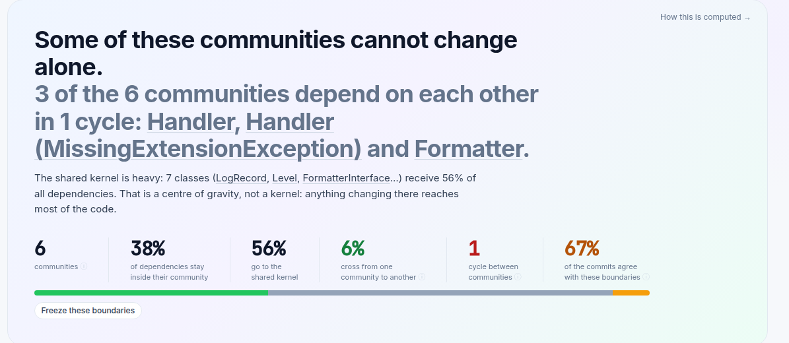
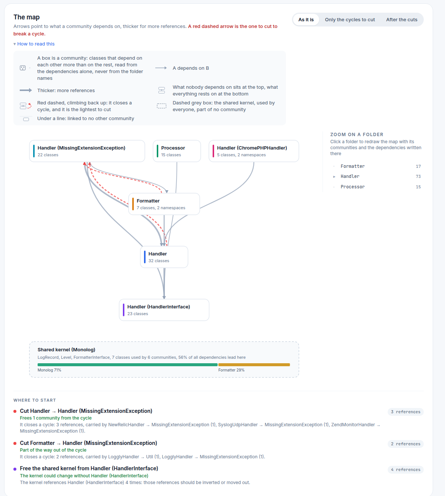

Architecture Map
Every team has two architectures: the one on the whiteboard and the one in the code. AST Metrics draws the second one and answers the question: does my system actually have the shape I believe it has? Not with a diagram to decipher, but with a verdict in plain words, a map, and the first three moves to make.
Generate the report and open the Architecture → Natural groups page:
ast-metrics analyze --report-html=report --open-html .
Start with the verdict
The page opens with a sentence, not a chart. On Monolog, it reads:

Everything in that sentence is computed, and everything is clickable: the names link to the communities they describe. Under it, five numbers summarize the whole structure:
- 6 communities: the groups the classes actually form on the dependency graph, found without ever reading a folder name.
- 38% / 56% / 6%: where dependencies go. Inside their own community (healthy), to the shared kernel (expected, unless it grows into a centre of gravity, as it has here), or crossing from one community to another (the share to watch: amber above 15%).
- 1 cycle: communities that need each other to compile, so none of them can be understood, tested or extracted alone.
- 67% of commits agree: the git history read against the boundaries. When most commits stay inside one community, the structure matches how the team actually works.
Even one of the most respected PHP codebases in the world gets findings. That's the point: the goal is not a trophy, it's knowing where the structure and the work disagree.
Read the map

The map draws communities, not classes, and the layout carries the meaning:
- What nobody depends on sits at the top, what everything rests on sits at the bottom. The vertical order is computed from the arrows alone. If your layers exist, you'll see strata; if everything sits at the same level, everything depends on everything.
- A red dashed arrow climbing back up closes a cycle, and it's chosen as one of the lightest to cut. The toggles show the graph as it is, only the cycles to cut, or after the cuts.
- The dashed grey box is the shared kernel: the classes everyone uses
(
LogRecord,Level, ...), set apart so they don't glue unrelated communities together. - Zoom on a folder redraws the map inside any folder, as if it were the whole project. Useful when the top-level map says "fine" but one module feels wrong.
Then do something about it
Under the map, Where to start turns the analysis into a short ranked
list. On Monolog: cut Handler → Handler (MissingExtensionException), 3
references carried by three named classes, and one community leaves the
cycle. Each action names the exact dependencies to break and what you gain.
The What stands out tab goes further: each finding is one observation
(a cycle, a folder split across communities, two communities the same
commits keep touching, a kernel that depends on its users), with the numbers
behind it.
Community Detection documents how all of this is computed: the Louvain detection, the kernel criteria, every finding and every threshold.
Freeze the shape you want
Seeing the drift is half the job; blocking it is one rule away. Three project rules guard the boundaries:
requirements:
rules:
architecture:
no_community_cycles: true
max_community_cross_share: 20
no_cross_community_dependencies: true
The last one fails on every crossing, so it's meant to be frozen once:
ast-metrics baseline
Today's crossings are accepted; from now on, only a new crossing fails
ast-metrics lint. Your architecture stops degrading silently, and legacy
code never blocks a build.
The other two views
- Architecture → Dependencies: the same truth at file level. The graph of who imports whom, circular chains, the "handle with care" files that everything depends on.
- Architecture → Roles: an optional AI classification of each class's
role in the system. It runs locally and only when you pass
--architecturetoast-metrics analyze.